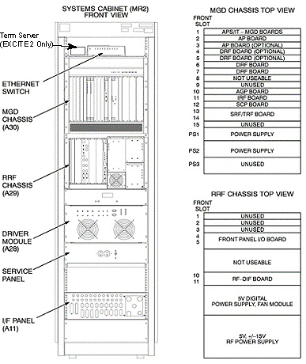
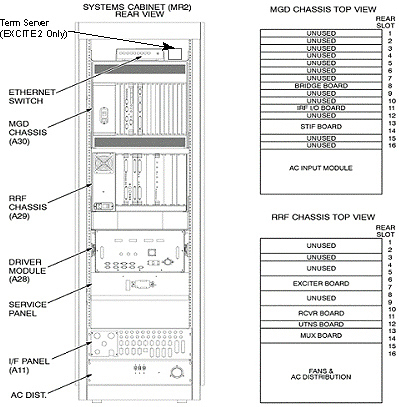

Operating Documentation
Direction 5133315-3, Rev# 14
Signa EXCITE HD 1.5T Service Methods
Module Version 1.0, Version Date 5/3/07
Operating Documentation |
These Illustrations show the locations of the subsystems that are part of the MGD version System Cabinet. Use these Illustrations when troubleshooting or performing procedures to locate specific component locations.
See Illustration 1, System Cabinet Component Locations (Front View), and Illustration 2, System Cabinet Component Locations (Rear View).
Also available is System Cabinet Interconnects.
Illustration 1: SYSTEM CABINET COMPONENT LOCATIONS (FRONT VIEW)

Illustration 2: SYSTEM CABINET COMPONENT LOCATIONS (REAR VIEW)
